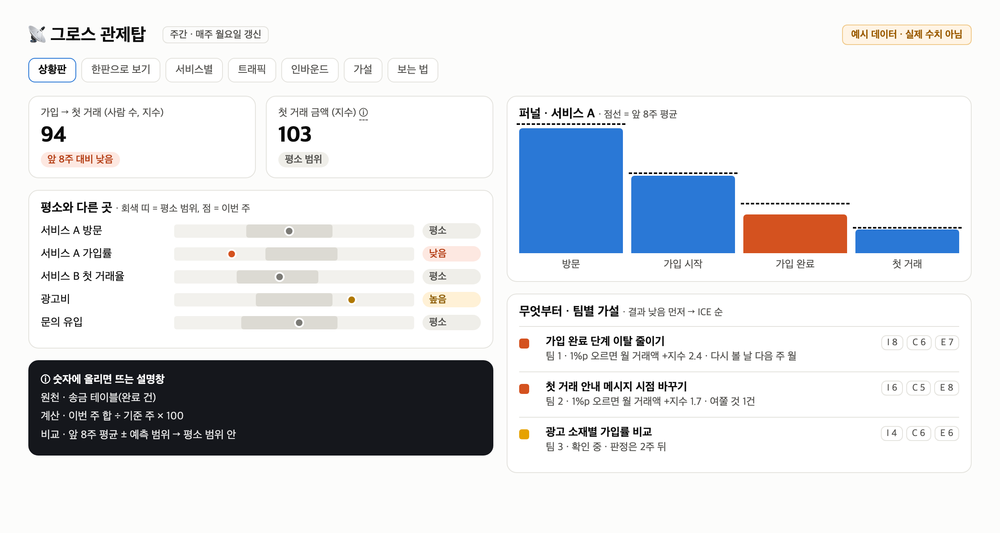
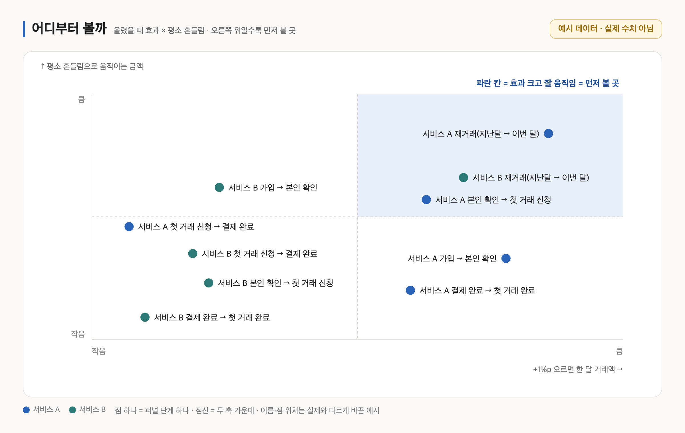

그로스 관제탑
가입부터 첫 거래까지를 사람 수와 거래액 두 축으로 한 화면에 모으고, 평소와 다른 곳과 '1%p 올리면 월 얼마'를 기준으로 팀별로 무엇부터 할지 정리하는 주간 화면을 만들었습니다.

숫자는 많았는데, 무엇부터 할지는 안 보였습니다
가입 퍼널을 사람 수로 보는 화면과 거래액으로 보는 화면이 따로 있었습니다. 어디가 새는지는 보여도, 그중 무엇을 먼저 고쳐야 회사 숫자가 움직이는지는 한눈에 안 보였습니다. 다른 팀도 같이 보는 화면으로 만들기로 하고, 두 축을 한 화면에 모으는 일부터 시작했습니다.
화면 구성
맨 위 상황판에는 줄기별 한 줄 요약과 핵심 숫자 두 칸, 그리고 이번 주 값이 평소 범위 밖으로 나간 지표만 모은 '평소와 다른 곳'이 있습니다. 그 아래 탭에서 서비스별·트래픽·인바운드 퍼널과 가설 목록을 봅니다. 숫자에 마우스를 올리면 원천 테이블, 계산식, 비교 기준이 뜹니다. 차트마다 데이터로 계산한 해석 한 줄을 붙였습니다.
'평소와 다르다'는 어떻게 정하나?
이번 주 값을 앞 8주 평균과 비교하되, 표본 수까지 반영한 예측 범위(평균 ± 2σ√(1+1/n))를 넘을 때만 표시합니다. 계절을 타는 지표는 작년·재작년 같은 주와도 견줍니다.
무엇부터 건드리나
- 결과가 평소보다 낮은 단계부터 봅니다.
- 순서는 ICE(영향·확신·쉬움)로 정합니다. 영향은 그 단계에 걸린 월 거래액 규모로 점수가 제안되고, 확신과 쉬움은 사람이 직접 매깁니다.
- 가설마다 "1%p 올리면 월 거래액이 얼마 움직이나"를 계산해 효과를 같이 보이게 했습니다. 가설 한 줄에는 단계, 예상 효과, 담당 팀에 여쭐 것, 다시 볼 날이 같이 적힙니다.
다만 효과가 큰 단계가 늘 먼저 볼 곳은 아닙니다. 1%p 효과는 가정이고, 평소 흔들림은 실제로 일어나는 일이라서 둘을 한 장에 놓은 '어디부터 볼까' 탭을 뒀습니다. 퍼널 단계마다 가로에는 1%p 올렸을 때 한 달 거래액을, 세로에는 평소 흔들림(평소 비율이 오르내린 폭을 한 달 거래액으로 바꾼 값)을 찍습니다. 오른쪽 위 단계부터 봅니다.

다시 계산해 보니
한 지표에 큰 폭의 '급감' 경보가 떴을 때, 이미 멈춘 캠페인이 평소 기준(앞 8주)에 남아 있어 낙폭이 과장돼 있었습니다. 그 캠페인을 빼고 다시 계산해 판정했습니다. 한 유입 채널은 가입 수(분모)가 1.6–1.8배로 늘었는데 다음 단계 수는 그대로여서, 비율이 낮아져 보였습니다. 이 경우는 판정에서 뺐습니다.
어디에 쓰고 있나
매주 월요일 숫자를 갱신하고, 월간 그로스 보고도 이 화면을 근거로 씁니다. 매출 지표가 떨어졌을 때는 통화별로 쪼개 원인을 확인하는 데에도 썼습니다.
※ 사내 기밀 보호를 위해 수치는 비율·배수 같은 상대 표현만 썼습니다.